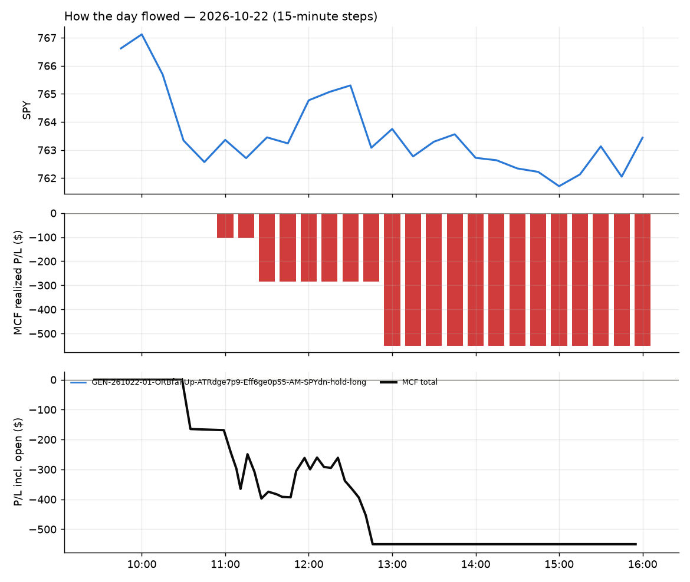
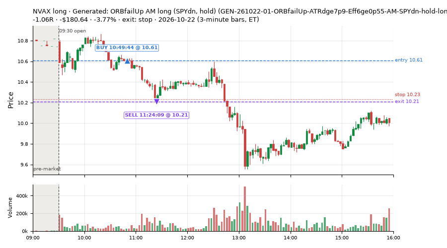
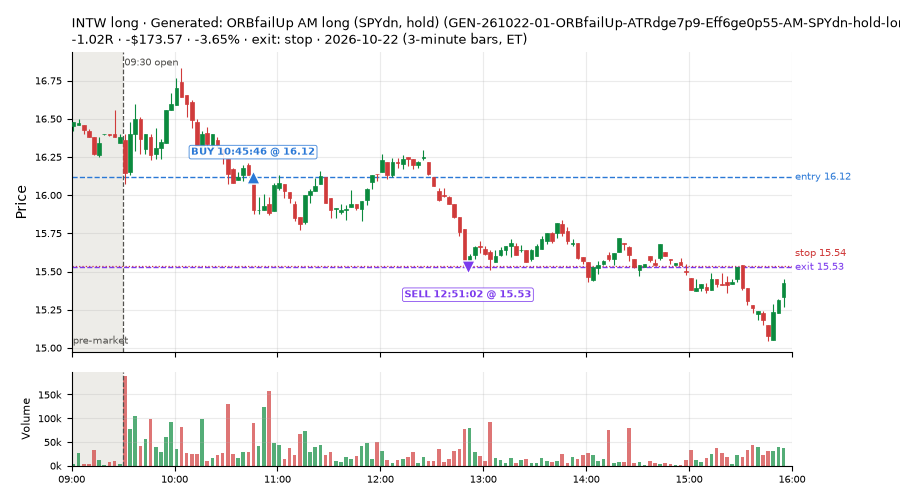
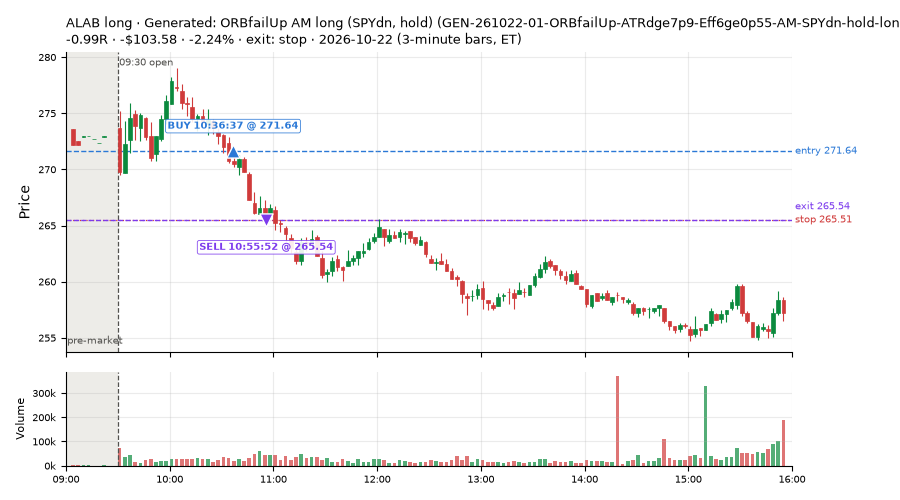
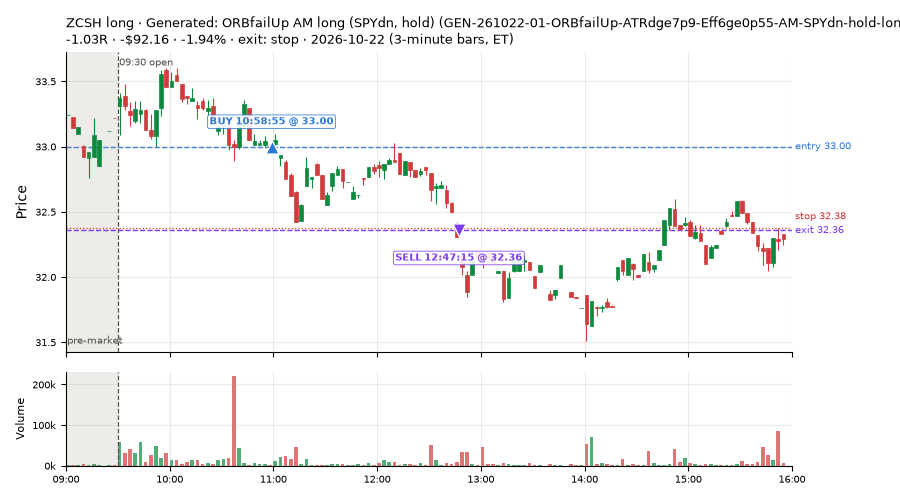

4 trades · win rate 0% · P/L $-549.95
PROBATION: no live setup has passed both locked test periods. 10 owner-directed setups added 2026-10-08 (MarcoFlow top 5 + 5 new), untested live. RW6G1 (RW6 + VWAP band guard) added 2026-10-09, probation.

| Symbol | Setup | Side | In | Out | Entry | Exit | Exit reason | % gained | P/L |
|---|---|---|---|---|---|---|---|---|---|
| No winning trades today. | |||||||||
| Symbol | Setup | Side | In | Out | Entry | Exit | Exit reason | % lost | P/L |
|---|---|---|---|---|---|---|---|---|---|
| NVAX | GEN-261022-01-ORBfailUp-ATRdge7p9-Eff6ge0p55-AM-SPYdn-hold-long | long | 10:49 | 11:24 | 10.61 | 10.21 | stop | -3.77% | $-180.64 |
| INTW | GEN-261022-01-ORBfailUp-ATRdge7p9-Eff6ge0p55-AM-SPYdn-hold-long | long | 10:45 | 12:51 | 16.12 | 15.53 | stop | -3.65% | $-173.57 |
| ALAB | GEN-261022-01-ORBfailUp-ATRdge7p9-Eff6ge0p55-AM-SPYdn-hold-long | long | 10:36 | 10:55 | 271.64 | 265.54 | stop | -2.24% | $-103.58 |
| ZCSH | GEN-261022-01-ORBfailUp-ATRdge7p9-Eff6ge0p55-AM-SPYdn-hold-long | long | 10:58 | 12:47 | 33.00 | 32.36 | stop | -1.94% | $-92.16 |




Signal to fill: median 3s, 90th percentile 3s (4 trades). Bars close each minute; the order follows the bar close.
Best excursion (MFE): median 0.10R; worst (MAE) median 1.04R. 75% of trades never got +0.25R in our favour; 0 reached +1R and still closed at or below 0.
| Symbol | Setup | Best R | Worst R | Closed R |
|---|---|---|---|---|
| INTW | GEN-261022-01-ORBfailUp-ATRdge7p9-Eff6ge0p55-AM-SPYdn-hold-long | +0.31 | -1.00 | -1.02 |
| ZCSH | GEN-261022-01-ORBfailUp-ATRdge7p9-Eff6ge0p55-AM-SPYdn-hold-long | +0.15 | -1.11 | -1.03 |
| NVAX | GEN-261022-01-ORBfailUp-ATRdge7p9-Eff6ge0p55-AM-SPYdn-hold-long | +0.05 | -1.06 | -1.06 |
| ALAB | GEN-261022-01-ORBfailUp-ATRdge7p9-Eff6ge0p55-AM-SPYdn-hold-long | -0.04 | -1.01 | -0.99 |
| Entry time | Trades | Win | Avg R | P/L |
|---|---|---|---|---|
| 10:30-11:30 | 4 | 0% | -1.03 | $-549.95 |
| Setup | Trades | Win | Avg R | Adj R (net of SPY) | P/L |
|---|---|---|---|---|---|
| Generated: ORBfailUp AM long (SPYdn, hold) (GEN-261022-01-ORBfailUp-ATRdge7p9-Eff6ge0p55-AM-SPYdn-hold-long) | 4.0 | 0% | -1.03 | -1.05 | $-549.95 |
Market direction (SPY, beta 1) accounted for $8.39 of today's $-549.95; the rest ($-558.34) came from the setups themselves. Avg R net of SPY: -1.05 (incl. a hedge leg's cost; report only).
40 setups live today. Today: 7 signals, 4 taken, 0 lost because another setup held the symbol (0%). Since 2026-10-19 (4 sessions): 40 signals, 29 taken, 0 lost to other setups (0%). Peak open positions today 3 of 80 slots. Earnings blackout removed 733 symbols before scanning.
Simulated playing time (not live): 11 what-if trades of signals not taken, avg +0.41R, 64% winners; of them 0 lost to another setup.
Silent: GEN-261020-08-FlowShiftlem0p41-Compress6le0p077-OPEN-QQQup-t05s05-long, GEN-261020-06-VWAPxDn-Slope6lem0p011-BarsSinceHODge35-MID-BRoplt0p5-holdtr-long, GEN-261019-02-BBpctle0p017-SMA20slopege0p46-PM-QQQdn-t05s1-long, GEN-261020-04-MACDhge0p12-BullDiv-MID-SPYgt0p25-t05s1-short, GEN-261019-09-EMAdChgge0p15-Since950ATRge0p6-PM-SPYltm0p5-t05s1-short, GEN-261019-08-NewHOD-Slope6ge0p03-DayRngVsPrevge1p5-AM-SPYdn-hold-short, GEN-261020-02-RSIslopelem19-BarRngATRge0p14-BuyPressge0p17-LATE-BRvwgt0p7-t05s1-short, GEN-261020-03-MACDhge0p079-BarsSinceLODle5-MID-BRvwlt0p3-t05s05-long, GEN-261020-01-MACDhge0p12-RSI5le25-PM-BRvwgt0p6-t1s05-long, GEN-261019-07-VolRatioge2-UpWickge0p59-DayRngVsPrevge1p5-LATE-SPYgt0p5-t05s1-long, GEN-261019-06-VWAPxUp-EMAdiffge0p29-PM-SPYgt0p5-holdtr-long, GEN-261019-05-RSIslopelem9-PDLdistle0p14-EMAdifflem0p46-OPEN-SPYltm0p5-t1s1-long, GEN-261020-10-BBpctge0p81-ORBfailDn-AM-BRvwlt0p3-hold-short, GEN-261020-09-EMAdChgge0p093-Z12lem0p82-VWAPcrossesle0-MID-QQQltm0p3-holdtr-long
| Prio | Setup | Today sig / taken | Sessions | Signals / taken / trades | Taken/day | Expected/day | Lost to other setups | Lost to (setup n) | Top skip reasons | SIMULATED: not-taken n / avg R / win | Verdict |
|---|---|---|---|---|---|---|---|---|---|---|---|
| 1 | Generated: MACDhge0p079 OPEN long (QQQup, t1s05) GEN-261021-10-MACDhge0p079-VWAPbarslem7-OPEN-QQQup-t1s05-long | 0 / 0 | 2 | 0 / 0 / 0 | 0.00 | – | 0 | – | – | 0 / – | quiet - wait no signals in 2 session(s); too early to tell |
| 2 | Generated: RSI2le0, Ret15mATRge0p16 LUNCH long (QQQgt0p6, holdtr) GEN-261021-08-RSI2le0-Ret15mATRge0p16-ATRdge3p6-LUNCH-QQQgt0p6-holdtr-long | 0 / 0 | 2 | 0 / 0 / 0 | 0.00 | – | 0 | – | – | 0 / – | quiet - wait no signals in 2 session(s); too early to tell |
| 3 | Generated: FlowShiftlem0p41 OPEN long (QQQup, t05s05) GEN-261020-08-FlowShiftlem0p41-Compress6le0p077-OPEN-QQQup-t05s05-long | 0 / 0 | 3 | 0 / 0 / 0 | 0.00 | – | 0 | – | – | 0 / – | silent no signals in 3 session(s); no expected rate on file |
| 4 | Generated: BearDiv LAM short (SPYltm0p25, t1s1) GEN-261021-01-BearDiv-RVolDayle0p47-BarsSinceHODle0-LAM-SPYltm0p25-t1s1-short | 0 / 0 | 2 | 0 / 0 / 0 | 0.00 | – | 0 | – | – | 0 / – | quiet - wait no signals in 2 session(s); too early to tell |
| 5 | Generated: VWAPxDn MID long (BRoplt0p5, holdtr) GEN-261020-06-VWAPxDn-Slope6lem0p011-BarsSinceHODge35-MID-BRoplt0p5-holdtr-long | 0 / 0 | 3 | 0 / 0 / 0 | 0.00 | – | 0 | – | – | 0 / – | silent no signals in 3 session(s); no expected rate on file |
| 6 | Generated: RSIslopelem19 AM long (BRvwgt0p7, t1s1) GEN-261021-09-RSIslopelem19-ORHdistlem0p73-AM-BRvwgt0p7-t1s1-long | 0 / 0 | 2 | 0 / 0 / 0 | 0.00 | – | 0 | – | – | 0 / – | quiet - wait no signals in 2 session(s); too early to tell |
| 7 | Generated: BBpctle0p017 PM long (QQQdn, t05s1) GEN-261019-02-BBpctle0p017-SMA20slopege0p46-PM-QQQdn-t05s1-long | 0 / 0 | 4 | 0 / 0 / 0 | 0.00 | – | 0 | – | – | 0 / – | silent no signals in 4 session(s); no expected rate on file |
| 8 | Generated: RSI5le34, Ret15mATRge0p12 LUNCH short (SPYltm0p25, t05s1) GEN-261021-03-RSI5le34-Ret15mATRge0p12-DayRngVsPrevge1p2-LUNCH-SPYltm0p25-t05s1-short | 0 / 0 | 2 | 0 / 0 / 0 | 0.00 | – | 0 | – | – | 0 / – | quiet - wait no signals in 2 session(s); too early to tell |
| 9 | Generated: MACDhge0p12, BullDiv MID short (SPYgt0p25, t05s1) GEN-261020-04-MACDhge0p12-BullDiv-MID-SPYgt0p25-t05s1-short | 0 / 0 | 3 | 0 / 0 / 0 | 0.00 | – | 0 | – | – | 0 / – | silent no signals in 3 session(s); no expected rate on file |
| 10 | Generated: RSIslopelem14 LAM long (BRvwlt0p3, t1s05) GEN-261021-05-RSIslopelem14-ORHdistge0p42-LAM-BRvwlt0p3-t1s05-long | 0 / 0 | 2 | 0 / 0 / 0 | 0.00 | – | 0 | – | – | 0 / – | quiet - wait no signals in 2 session(s); too early to tell |
| 11 | Generated: EMAdChgge0p15 PM short (SPYltm0p5, t05s1) GEN-261019-09-EMAdChgge0p15-Since950ATRge0p6-PM-SPYltm0p5-t05s1-short | 0 / 0 | 4 | 0 / 0 / 0 | 0.00 | – | 0 | – | – | 0 / – | silent no signals in 4 session(s); no expected rate on file |
| 12 | Generated: NewLOD, ORBfailUp PM long (SPYltm0p5, t1s1) GEN-261022-06-NewLOD-ORBfailUp-BuyPresslem0p49-PM-SPYltm0p5-t1s1-long | 0 / 0 | 1 | 0 / 0 / 0 | 0.00 | – | 0 | – | – | 0 / – | quiet - wait no signals in 1 session(s); too early to tell |
| 13 | Generated: NewHOD LAM short (QQQltm0p6, hold) GEN-261021-04-NewHOD-PDHdistlem0p65-LAM-QQQltm0p6-hold-short | 0 / 0 | 2 | 0 / 0 / 0 | 0.00 | – | 0 | – | – | 0 / – | quiet - wait no signals in 2 session(s); too early to tell |
| 14 | Generated: RSI2le0 OPEN short (BRvwlt0p5, t1s1) GEN-261022-04-RSI2le0-Eff6ge0p83-SMA20dge0p59-OPEN-BRvwlt0p5-t1s1-short | 0 / 0 | 1 | 0 / 0 / 0 | 0.00 | – | 0 | – | – | 0 / – | quiet - wait no signals in 1 session(s); too early to tell |
| 15 | Generated: NewHOD AM short (SPYdn, hold) GEN-261019-08-NewHOD-Slope6ge0p03-DayRngVsPrevge1p5-AM-SPYdn-hold-short | 0 / 0 | 4 | 0 / 0 / 0 | 0.00 | – | 0 | – | – | 0 / – | silent no signals in 4 session(s); no expected rate on file |
| 16 | Generated: EMAdChgge0p15 PM short (BRoplt0p5, holdtr) GEN-261022-10-EMAdChgge0p15-ORLdistge0p41-PDLdistle0p14-PM-BRoplt0p5-holdtr-short | 0 / 0 | 1 | 0 / 0 / 0 | 0.00 | – | 0 | – | – | 0 / – | quiet - wait no signals in 1 session(s); too early to tell |
| 17 | Generated: VWAPxUp OPEN long (BRvwgt0p7, t05s05) GEN-261019-01-VWAPxUp-ATRdge3p6-FromPCATRlem0p68-OPEN-BRvwgt0p7-t05s05-long | 0 / 0 | 4 | 2 / 1 / 1 | 0.25 | – | 0 | – | spread / quote / size 1 | 1 / +0.91R / 100% | slow 1.2 entries/week; ~48 weeks to 60 trades |
| 18 | Generated: RSIslopelem19, BarRngATRge0p14 LATE short (BRvwgt0p7, t05s1) GEN-261020-02-RSIslopelem19-BarRngATRge0p14-BuyPressge0p17-LATE-BRvwgt0p7-t05s1-short | 0 / 0 | 3 | 0 / 0 / 0 | 0.00 | – | 0 | – | – | 0 / – | silent no signals in 3 session(s); no expected rate on file |
| 19 | Generated: EMAdChglem0p094, Flow3ge1 AM short (SPYgt0p25, holdtr) GEN-261022-08-EMAdChglem0p094-Flow3ge1-RVolDayle0p59-AM-SPYgt0p25-holdtr-short | 0 / 0 | 1 | 0 / 0 / 0 | 0.00 | – | 0 | – | – | 0 / – | quiet - wait no signals in 1 session(s); too early to tell |
| 20 | Generated: MACDhge0p079 MID long (BRvwlt0p3, t05s05) GEN-261020-03-MACDhge0p079-BarsSinceLODle5-MID-BRvwlt0p3-t05s05-long | 0 / 0 | 3 | 0 / 0 / 0 | 0.00 | – | 0 | – | – | 0 / – | silent no signals in 3 session(s); no expected rate on file |
| 21 | Generated: NewHOD, Ret15mATRge0p12 LATE short (QQQdn, t05s1) GEN-261022-03-NewHOD-Ret15mATRge0p12-SMA20dge0p59-LATE-QQQdn-t05s1-short | 0 / 0 | 1 | 0 / 0 / 0 | 0.00 | – | 0 | – | – | 0 / – | quiet - wait no signals in 1 session(s); too early to tell |
| 22 | Generated: ORBfailUp, EMAdChglem0p094 LATE long (BRvwgt0p7, t05s1) GEN-261022-02-ORBfailUp-EMAdChglem0p094-ADX7ge57-LATE-BRvwgt0p7-t05s1-long | 0 / 0 | 1 | 0 / 0 / 0 | 0.00 | – | 0 | – | – | 0 / – | quiet - wait no signals in 1 session(s); too early to tell |
| 23 | Generated: MACDhge0p12, RSI5le25 PM long (BRvwgt0p6, t1s05) GEN-261020-01-MACDhge0p12-RSI5le25-PM-BRvwgt0p6-t1s05-long | 0 / 0 | 3 | 0 / 0 / 0 | 0.00 | – | 0 | – | – | 0 / – | silent no signals in 3 session(s); no expected rate on file |
| 24 | Generated: VolRatioge2, UpWickge0p59 LATE long (SPYgt0p5, t05s1) GEN-261019-07-VolRatioge2-UpWickge0p59-DayRngVsPrevge1p5-LATE-SPYgt0p5-t05s1-long | 0 / 0 | 4 | 0 / 0 / 0 | 0.00 | – | 0 | – | – | 0 / – | silent no signals in 4 session(s); no expected rate on file |
| 25 | Generated: VWAPxUp PM long (SPYgt0p5, holdtr) GEN-261019-06-VWAPxUp-EMAdiffge0p29-PM-SPYgt0p5-holdtr-long | 0 / 0 | 4 | 0 / 0 / 0 | 0.00 | – | 0 | – | – | 0 / – | silent no signals in 4 session(s); no expected rate on file |
| 26 | Generated: RSIslopelem9 OPEN long (SPYltm0p5, t1s1) GEN-261019-05-RSIslopelem9-PDLdistle0p14-EMAdifflem0p46-OPEN-SPYltm0p5-t1s1-long | 0 / 0 | 4 | 0 / 0 / 0 | 0.00 | – | 0 | – | – | 0 / – | silent no signals in 4 session(s); no expected rate on file |
| 27 | Generated: ORBfailUp AM long (SPYdn, hold) GEN-261022-01-ORBfailUp-ATRdge7p9-Eff6ge0p55-AM-SPYdn-hold-long | 5 / 4 | 1 | 5 / 4 / 4 | 4.00 | – | 0 | – | spread / quote / size 1 | 1 / -1.07R / 0% | ok 20.0 entries/week |
| 28 | Generated: Ret15mATRlem0p16, BarRngATRge0p11 AM short (BRvwlt0p3, hold) GEN-261022-09-Ret15mATRlem0p16-BarRngATRge0p11-ADX7ge64-AM-BRvwlt0p3-hold-short | 0 / 0 | 1 | 0 / 0 / 0 | 0.00 | – | 0 | – | – | 0 / – | quiet - wait no signals in 1 session(s); too early to tell |
| 29 | Generated: Ret15mATRlem0p12 PM long (BRoplt0p5, t05s1) GEN-261019-03-Ret15mATRlem0p12-FromOpenATRlem0p34-SMA20slopege0p29-PM-BRoplt0p5-t05s1-long | 0 / 0 | 4 | 4 / 3 / 3 | 0.75 | – | 0 | – | spread / quote / size 1 | 1 / +0.44R / 100% | slow 3.8 entries/week; ~16 weeks to 60 trades |
| 30 | Generated: EMAdChgge0p15 MID long (BRoplt0p5, t1s1) GEN-261019-04-EMAdChgge0p15-RSI14le22-MID-BRoplt0p5-t1s1-long | 2 / 0 | 4 | 4 / 2 / 2 | 0.50 | – | 0 | – | spread / quote / size 2 | 2 / +1.60R / 100% | slow 2.5 entries/week; ~24 weeks to 60 trades |
| 31 | Generated: VWAPxUp, ORBfailUp AM long (SPYgt0p5, hold) GEN-261021-07-VWAPxUp-ORBfailUp-AM-SPYgt0p5-hold-long | 0 / 0 | 2 | 0 / 0 / 0 | 0.00 | – | 0 | – | – | 0 / – | quiet - wait no signals in 2 session(s); too early to tell |
| 32 | Generated: BBpctge0p81, ORBfailDn AM short (BRvwlt0p3, hold) GEN-261020-10-BBpctge0p81-ORBfailDn-AM-BRvwlt0p3-hold-short | 0 / 0 | 3 | 0 / 0 / 0 | 0.00 | – | 0 | – | – | 0 / – | silent no signals in 3 session(s); no expected rate on file |
| 33 | Generated: Z12lem1p9, FlowShiftlem0p96 AM short (BRopgt0p5, t1s1) GEN-261022-07-Z12lem1p9-FlowShiftlem0p96-ATRdge3p6-AM-BRopgt0p5-t1s1-short | 0 / 0 | 1 | 0 / 0 / 0 | 0.00 | – | 0 | – | – | 0 / – | quiet - wait no signals in 1 session(s); too early to tell |
| 34 | Generated: EMAdChgge0p093, Z12lem0p82 MID long (QQQltm0p3, holdtr) GEN-261020-09-EMAdChgge0p093-Z12lem0p82-VWAPcrossesle0-MID-QQQltm0p3-holdtr-long | 0 / 0 | 3 | 0 / 0 / 0 | 0.00 | – | 0 | – | – | 0 / – | silent no signals in 3 session(s); no expected rate on file |
| 35 | Generated: MACDhge0p079, UpWickge0p71 PM short (BRoplt0p35, holdtr) GEN-261022-05-MACDhge0p079-UpWickge0p71-ORHdistlem0p38-PM-BRoplt0p35-holdtr-short | 0 / 0 | 1 | 0 / 0 / 0 | 0.00 | – | 0 | – | – | 0 / – | quiet - wait no signals in 1 session(s); too early to tell |
| 36 | Generated: BarRngATRge0p14 OPEN long (SPYgt0p5, t1s1) GEN-261021-02-BarRngATRge0p14-PDLdistlem0p045-OPEN-SPYgt0p5-t1s1-long | 0 / 0 | 2 | 0 / 0 / 0 | 0.00 | – | 0 | – | – | 0 / – | quiet - wait no signals in 2 session(s); too early to tell |
| 37 | Generated: RSIslopege19, LowWickge0p33 AM long (BRvwgt0p7, hold) GEN-261020-07-RSIslopege19-LowWickge0p33-ATRdge4p4-AM-BRvwgt0p7-hold-long | 0 / 0 | 3 | 7 / 5 / 5 | 1.67 | – | 0 | – | spread / quote / size 2 | 2 / -1.10R / 0% | slow 8.3 entries/week; ~7 weeks to 60 trades |
| 38 | Generated: ORBfailDn LUNCH long (SPYgt0p25, holdtr) GEN-261020-05-ORBfailDn-VWAPcrossesge4-SMA20dlem0p31-LUNCH-SPYgt0p25-holdtr-long | 0 / 0 | 3 | 4 / 3 / 3 | 1.00 | – | 0 | – | spread / quote / size 1 | 1 / +2.09R / 100% | slow 5.0 entries/week; ~12 weeks to 60 trades |
| 39 | Generated: FlowShiftge0p42 PM short (BRoplt0p5, t1s1) GEN-261019-10-FlowShiftge0p42-SMA50dge1p7-PM-BRoplt0p5-t1s1-short | 0 / 0 | 4 | 14 / 11 / 11 | 2.75 | – | 0 | – | not shortable / shorts off 3 | 3 / +0.37R / 67% | slow 13.8 entries/week; ~4 weeks to 60 trades |
| 40 | Generated: ORBfailUp MID long (BRopgt0p5, hold) GEN-261021-06-ORBfailUp-Gapge1p2-MID-BRopgt0p5-hold-long | 0 / 0 | 2 | 0 / 0 / 0 | 0.00 | – | 0 | – | – | 0 / – | quiet - wait no signals in 2 session(s); too early to tell |
Every trade is attached as a CSV you can open and edit in Excel or Google Sheets. Live page: https://misiti15.github.io/MCF/live/